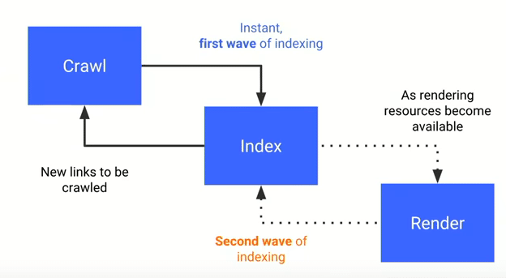

Les chapitres précédents nous ont permis de nous familiariser avec les sites web : leur évolution, leurs tailles ainsi que les différences entre-eux. Ce chapitre entre dans ces différences de manière plus précise en essayant de mettre en lumière ce qui alourdit réellement une page web.
Les images représentent en moyenne plus de 50% du poids total d'une page. La taille de transfert des images a même augmenté de 200% entre 2010 et 2015. Il semblerait cependant que cette taille de transfert n'ait pas augmenté à cause du nombre d'images partagées mais à cause de l'augmentation de leurs résolutions. Ce sont des choses qui sont simples à remarquer sur les sites de e-commerce par exemple ; un tel site poste des images de haute résolution pour permettre à l'utilisateur de zoomer sur les produits. C'est aussi à mettre en relation avec les améliorations impressionnantes en terme de qualité de caméra de smartphone. Nous sommes passés de 5 mégapixels pour le Nokia N95 des années 2000 à 64 mégapixels pour l'iPhone 12 Pro d'aujourd'hui[1].
Le design responsive apporte de la facilité aux utilisateurs dans le sens où la même adresse de site web emmène à des design différents en fonction de la taille de l'écran utilisé. Cette simplicité vient au prix du poids des fichiers CSS. En effet, quel que soit l'écran utilisé, c'est tout le fichier CSS qui est transmis. Tout en sachant que ce dernier est peut-être servi par un fournisseur tiers.
D'un point de vue développeur, il est normal de récupérer une image et la redimensionner dynamiquement pour la rendre responsive. Les développeurs peuvent faire différemment en passant par des hébergeurs d'images qui fournissent (via leur API) des moyens de choisir la dimension au moment de l'appel.
C'est un aspect qui a déjà été vu dans un chapitre précédent.
Concrètement, il est simple de comprendre pourquoi le HTML généré chez le
client rend les pages web plus lourde : au lieu d'envoyer directement le
contenu, on envoie le contenu en JavaScript avec en plus la logique
JavaScript pour générer ledit contenu. Cela permet des choses très
intéressantes côté développement, ce qui explique la popularité des
frameworks JavaScript vu précédemment. Cependant, nous réfléchissons en
terme de moyenne et, d'un point de vue low-tech, certains frameworks ont
aussi des avantages tels que générer uniquement le CSS qu'il faut.
Il y a aussi plusieurs autres raisons pour lesquelles le HTML généré côté
client en excès est une mauvaise idée. Par exemple on sait qu'un contenu
fait uniquement en JavaScript est très difficile d'accès et d'indexation
pour la plupart des moteurs de recherches, en réalité pour l'instant ce
n'est possible qu'avec Google. Et encore cet indexation sur Google prend
un temps infini pour les standarts d'Internet, on parle généralement de
microsecondes, de secondes ou de minutes mais l'indexation de contenu crée
100% côté client prend en fait des jours[2]
! Ce temps s'explique par le fait que l'entièreté du code JavaScript doit
être disponible sur Internet et pris en compte par le moteur de recherche
(Google donc...). De la même source on trouve le schéma ci-dessous :

React est une bibliothèque JavaScript développée par Facebook en 2013.
Elle facilite la création des pages web en créant des composants qui
génèrent une page HTML.
React est devenue une tendance dans le marché du travail, même si des
développeurs connaissent React mieux que JavaScript, ils trouveront
facilement un travail surtout qu'il est possible de construire n'importe
quel projet autour du web avec React même si elle n'est pas spécialement
adaptée à tous les cas de figure.
«Au lieu d’apprendre les meilleures pratiques, nous enseignons aux
développeurs à faire ce qui est le plus simple et à laisser le cadre gérer
tout ce truc dégueulasse pour vous. C’est ce que beaucoup de développeurs
appellent « bonne abstraction ». Mais cela signifie également que les
développeurs sont impuissants sans leurs outils et ne reconnaissent pas
quand l’outil fait la mauvaise chose.» - Chris Ferdinandi[3]
En effet, React est un outil très puissant mais il consomme beaucoup trop
de bande passante et de temps de processeurs, donc beaucoup d'énergie. Il
faut donc éviter à tout prix l'utilisation de ces frameworks dans le
développement low-tech.
Cette citation entraine aussi un autre raisonnement, beaucoup de
développeurs sont devenus bien trop dépendant de cet outil, si bien que le
marché du travail s'est adapté car toutes les entreprises dans le milieu
utilise React ou un de ses concurrents comme Angular. C'est un problème
car pour intégrer ce marché les futurs développeurs mettent l'accent sur
React et en oublie d'apprendre les bases du JavaScript, ils ne comprennent
donc pas la logique derrière l'outil et ne seront pas capable de contester
ses choix ou de règler les problèmes cette technologie toujours en
perpetuel développement.
En informatique il est courant de développer des applications et outils et
de les rendre réutilisables par tout un tas d'autres services
informatiques. Cela évite de tout recréer. On parle alors d'API, soit
d'interface de programmation d’application[4]
(Application Programming Interface). c'est un ensemble normalisé de
briques de codes déjà écrites.
Par exemple il existe une API pour google maps, cela permet d'autres sites
(Uber eat par exemple) d'intégrer une carte sans avoir à en recréer une.
Cela serait très long et onéreux.
Cette pratique est donc très utile, mais comme souvent, dans le cadre d'un
développement lowtech, elle est à encadrer. En effet l'utilisation trop
régulière de code pré-écrit (et donc pas forcément nécessaire) peut nuire
à la légèreté d'une page.
S’il existe bien un type d'API auquel beaucoup de sites ont recours, ce
sont bien les publicités. En général il s'agit de liens qui vont charger
du code proposé par le site du publicitaire. Or l'économie du web repose
en partie sur la publicité.
Une étude a montré que la publicité représente 39% du poids des pages
web[5], en supprimant les
publicités, le chargement d'une page web deviendra beaucoup plus rapide.
Il a même été prouvé que le temps de chargement d'une page web était un
élément primordial de l'expérience utilisateur est qu'elle était à prendre
en compte ! 40% des internautes mobiles abandonnent la connecition à un
site si celle-ci prend plus de 3 secondes[8].
De plus, à cause de la nuisance de la publicité, beaucoup d'internautes
installent en plus des extensions comme Adblock Plus, qui téléchargent
toute la page web avec la publicité, puis l'analysent, et cachent les
publicités, ainsi AdBlock Plus double la consommation mémoire du
navigateur.
Les bénéfices possibles d'utiliser les API sont aussi contrebalancés par
des problèmes de résilience. En effet, trop dépendre de contenu externe
comme les librairies et les APIs peut rendre les données très difficile à
récupérer après une attaque ou un problème matériel.
On peut alors conclure que c'est une technologie qu'il est possible
d'utiliser, mais avec précaution ! Il faut bien définir le cahier des
charges de son site afin de reconnaitre les fonctionnalités attendues des
fonctionnalités "gadjets" qui au mieux seront appréciés de certains
utilisateurs et au pire n'auront juste qu'augmenter la taille du code et
donc diminué l'efficacité globale du site web. Certes cela permet de
régler des problèmes qui demanderai énormément de travail à refaire comme
par exemple une fenêtre pour accèder à un live vidéo sur la plateforme
Twitch qu'il serait quasiment impossible à refaire sur un site personnel
sinon. On peut même avancer que dans ce cas précis l'API public de Twitch
nous permet surtout d'accèder à des données précieuses que nous n'aurions
pas, comme l'API SNFC, privée cette fois-ci, qui à permis par exemple au
Youtubeur
Micode de créer un
robot sur le réseau social Twitter qui va annoncer les retards de train de
la SCNF.
Le développement web évolue très rapidement et s'accompagne de l'apparition de nombreuses nouvelles technologies. L'utilisation de ses langages et pratiques devient de plus en plus populaire. Et ceux à tel point qu'on pourrait se demander si le web, plus simple et universelle ne pourrait pas voir son utilisation dépasse ses seules frontières...
Les gros logiciels de montage vidéo proposent à l'utilisateur
l'implémentation d'outils supplémentaires appelée "extensions". Ces outils
permettent d'ajouter de nouvelles fonctionnalités créées par des
développeurs, parfois différents de l'éditeur du logiciel. Et bien il se
trouve que sur Adobe Premier les extensions sont en réalité des pages web.
Cela signifie que des morceaux qui s'intègrent aux logiciels sont en
réalité des pages web, exactement comme on peut en trouver sur le web.
Ainsi on pourrait imaginer charger Google.com comme extension dans
Premier.
Ces possibilités sont permises grâce à des technologies (NW.js et
electron) qui permettent de faire le pont entre des services web et le
système d'exploitation ; ce qui normalement est impossible.
En réalité ces pratiques sont très courantes de nos jours. On peut citer
Discord, Spotify ou encore Slack qui sont, en réalité, des sortes de pages
web.
En effet le développement de ce type d'application apporte des avantages.
Déjà si l'entreprise possède une expertise dans le développement web cela
lui permet de s'attaquer à de nouveaux marchés plus facilement. Ensuite le
développement web est généralement moins cher que du softdev car plus
générale (moins de technologies qui dépendent du support, d'API pour les
interfaces graphiques, etc). Enfin ce type de produit est plus facilement
portable sur les divers systèmes : pas besoin de tout redévelopper pour
changer d'OS, il suffit d'un "navigateur" et de quelques outils..
Cependant cette pratique est loin de faire l'unanimité. Notamment on peut remettre en question l'efficacité de ce genre de logiciel. En effet cela nécessite qu'un outil de type navigateur (à l'instar de Chrome, Firefox etc) interprète le HTML, CSS ou JS utilisé. On perd largement en performances devant un langage compilé (par exemple le C), ou le code est prétraduit en langage machine dans un exécutable. Mais on perd même en performances par rapport à un langage interprété (comme le python) car l'outil est moins adapté.
Pour aller plus loin...
Chapitre écrit par Youssef El Saadany, Joseph Gabet, Mehdi Larid et Xiang Li.